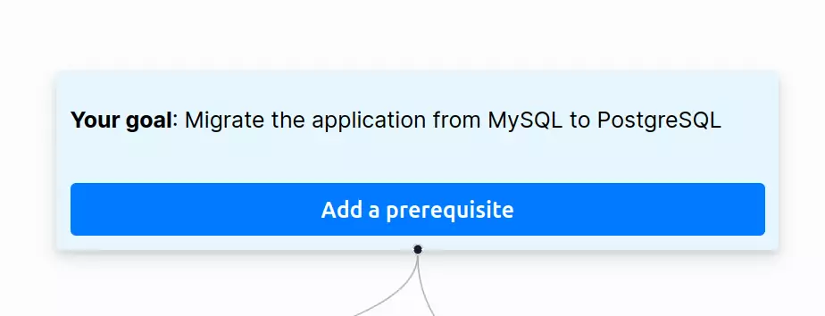
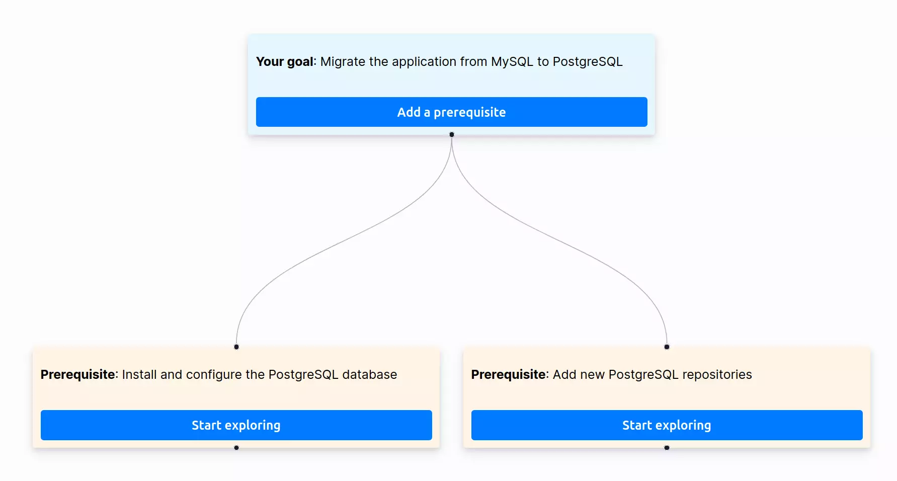
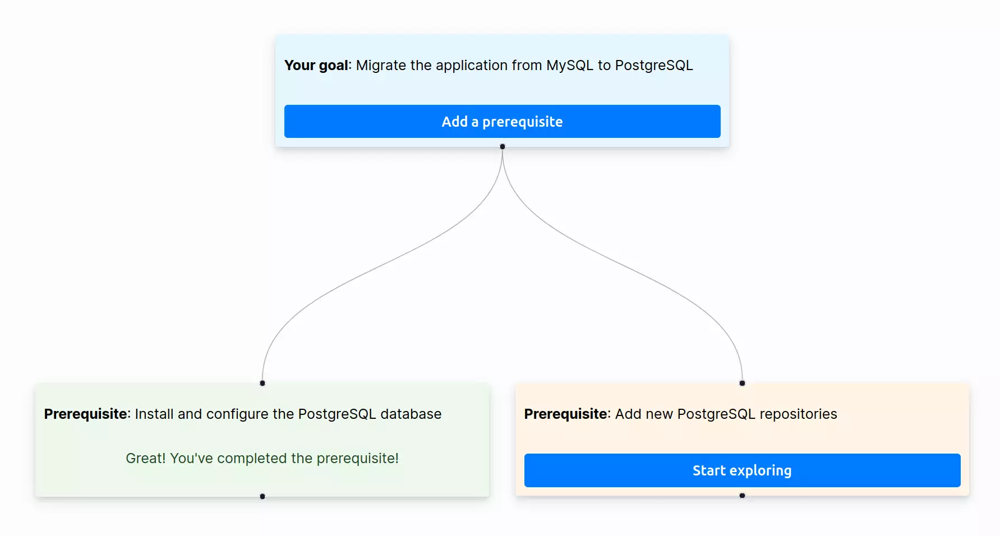
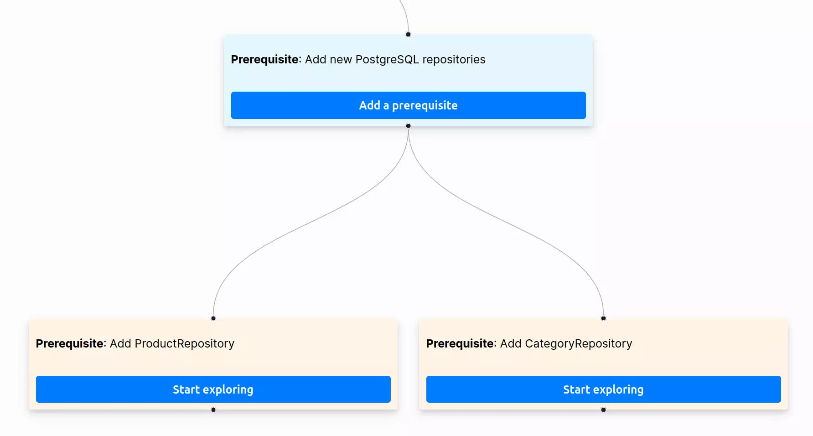
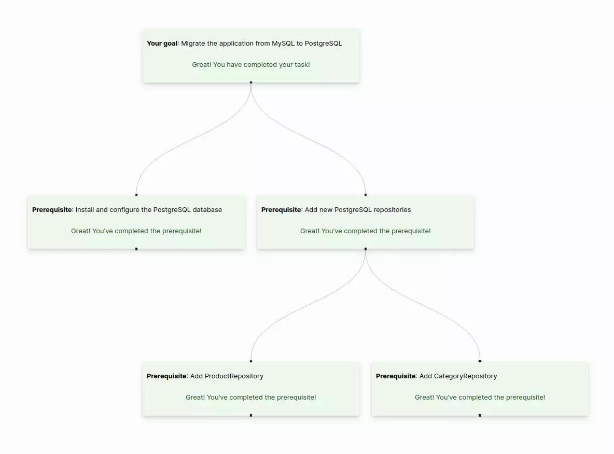

In this blog post, I will introduce the Mikado Method. This method helps solve complex problems without breaking your codebase, even if you need to introduce significant changes.
It is common to work using PR (Pull Request), you can work on your task without breaking your application and disturbing the rest of the team. However, when you start working on a task without maintaining something that works, you end up adding too many changes that are not production-ready. The drawback of this approach is that your PRs will be large and hard to merge.
It often happens when you refactor your codebase. You start refactoring something but it breaks another part of this application, then you fix it but it introduces a new problem elsewhere. As a result, you accumulate many changes without being able to merge them.
Merging big PR is more complicated than simple changes. First, we need to ask for code reviews, but it can be challenging for your teammate to understand what you did when your PR includes too many things. Then, another drawback is the need to rebase your PR several times due to other PRs being pushed to the main branch.
Now, you understand why it’s difficult to introduce big changes in your codebase. It is better to work on small steps that can be mergeable at any time. The Mikado method takes its name from the Mikado game, where the goal is to remove one stick without disturbing the others. The Mikado method has the same philosophy. It aims to make small incremental improvements to a project without breaking the existing codebase. This way, you can push your changes at any time and they won’t break your application even if you did not finish your task.
This method simplifies refactoring. You can continuously improve your codebase instead of stacking changes in a huge PR which can’t be merged because the test suites are broken. It’s better to regularly merge small changes that improve your codebase quality. This method is ideal for brownfield development. It enables you to add new features or alter existing ones without breaking the rest of the application. Moreover, it facilitates the improvement of the application’s architecture while allowing the delivery of new features concurrently.
How does it work? Let’s take an example: MySQL doesn’t match the project’s needs; we need to use PostgreSQL. First, we need to define a goal that is clear and understandable for everyone. In our case, it is “Migrate the application from MySQL to PostgreSQL,” as you can see in the following example.

Note: A goal can be what you want to improve in your application such as refactoring a section of the application to enhance its clarity or improving an existing feature.
There are less chances that you can achieve your goal in a single attempt and quickly but we will try to solve it. Based on what we learn in this initial experimentation, we will split a big task (our goal) into smaller ones, which we call prerequisites. As mentioned earlier, this approach prevents ending up with a large pull request that is difficult to merge.
To migrate the application to PostgreSQL, we first need to install the database. Then, we need to update our repositories because they use SQL queries specific to MySQL.

Now, you will start exploring all the prerequisites. Select a prerequisite from the list and start an experimentation to solve it. If you can easily achieve it, that’s excellent! Commit your changes, mark the prerequisite as completed, and proceed to the next one on the list.

If you cannot easily solve it, you need to revert your changes and define a sublist of prerequisites to achieve the original prerequisite. The purpose is to avoid making big changes but to focus on working on small steps while keeping the codebase stable. Reverting changes may not be natural to a developer, but it’s an important step in the process. It allows you to continue working in smaller steps, while the exploration helps you learn what is necessary to solve a prerequisite.

Continue to resolve all prerequisites until the end. When all prerequisites are done, your goal is completed!

As you can see in the previous sections of the blog post, we can represent your progress as a graph. This is a useful way to communicate the progress of your task with the rest of the team. For example, you can show the mikado graph at the daily meeting to easily explain what you did. If, for any reason, you cannot complete your task, you can share the mikado graph with a colleague to explain what you’ve done and what remains to be done. Organizing your work becomes easier, especially when you are working on complex tasks. The Mikado graph is more visual than a simple to-do list because it allows you to see dependencies between prerequisites.
I wrote a small application called MikadoApp to easily create and share your Mikado graphs. All the images in the blog posts are screenshots from the application. You can start using it thanks to this link, and you can find the source code on GitHub. Don’t hesitate to contribute to the application to improve it.
Since I started using this method, my way of working has changed. I try to break down my work into small steps, and each commit can be pushed into production. If I refactor something, it’s great because I regularly push improvements. If I work on a feature, I can refactor what I need to create my feature without breaking the rest of the application.
Now,I like working directly on the main branch, but I ensure that I only push stable commits. That’s what we call Trunk Based Development. This approach allows delivering small improvements to production quickly and frequently. Even though it can be practiced with PRs, I no longer prefer working with them due to the many associated processes that slow down the delivery.